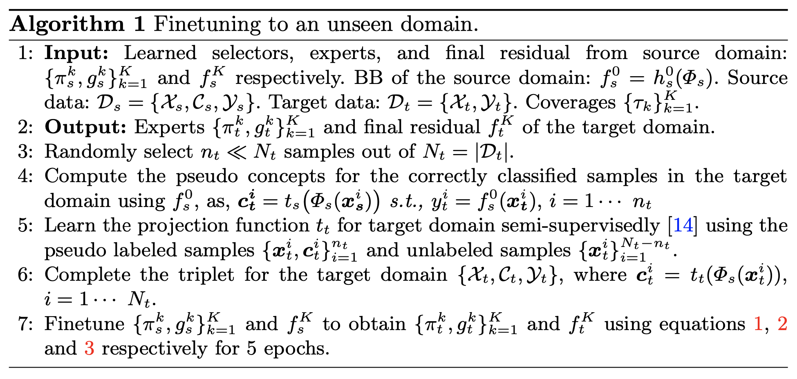

TL;DR
We aim to apply mixture of interpretable models to chest-X-Rays and perform transfer learning efficiently to a new target domain with limited data.
26th International Conference on Medical Image Computing and Computer Assisted
Intervention, MICCAI 2023
(Early accept, top ~ 14%)
Problem Statement. We aim to build interpretable models which can be generalized to unseen domain.
Why not transferring the Blackbox directly to a new domain? Fine-tuning all or some layers of the Blackbox model on the target domain can solve this problem, but it requires a substantial amount of labeled data and be computationally expensive.
Why interpretable models? Radiologists follow fairly generalizable and comprehensible rules. Specifically, they search for patterns of changes in anatomy to read abnormality from an image and apply logical rules for specific diagnoses. This approach is transparent and closer to the concept based interpretable-by-design approach in AI.
What is a concept based interpretable model? Concept based model or technically Concept Bottleneck Models are a family of models where first the human understandable concepts are predicted from the given input (images) and then the class labels are predicted from the concepts. In this work, we assume to have the ground truth concepts either in the dataset (CUB200 or Awa2) or discovered from another dataset (HAM10000, SIIM-ISIC or MIMIC-CXR). Also, we predict the concepts from the pre-trained embedding of the Blackbox as shown in Posthoc Concept Bottleneck Models.
What is a human understandable concept? Human understandable concepts are high-level features which constitute the class label. For example, the stripes can be a human understandable concept, responsible for predicting zebra. In chest-x-rays, anatomical features like lower left lobe of lung can be another human understandable concept. For more details, refer to TCAV paper or Concept Bottleneck Models .
What is the research gap? In medical images, previous research uses TCAV to quantify the role of a concept on the final prediction, but the concept- based interpretable models have been mostly unexplored. Also, the common design choice amongst those methods relies on a single interpretable classifier to explain the entire dataset, cannot capture the diverse sample-specific explanations, and performs poorly than their Blackbox variants
What not using the MoIE (ICML 2023) directly? Due to class imbalance in large chest-X-Ray datasets, early inter- pretable models in MoIE (ICML 2023) tend to cover all samples with disease present while ignoring disease subgroups and pathological heterogeneity
Our contribution. We propose a novel data-efficient interpretable method that can be transferred to an unseen domain. Our interpretable model is built upon human-interpretable concepts and can provide sample-specific expla- nations for diverse disease subtypes and pathological patterns. Following ICML 2023, we begin with a Blackbox in the source domain. Then we progressively extract a mixture of interpretable models from Blackbox. Our method includes a set of selectors routing the explain- able samples through the interpretable models. The interpretable models provide First-order-logic (FOL) explanations for the samples they cover. The remaining unexplained samples are routed through the residuals until they are covered by a successive interpretable model. We repeat the process until we cover a desired fraction of data. We address the problem of class imbalance in large chest-X-Ray datasets by estimating the class-stratified coverage from the total data coverage. We then finetune the interpretable models in the target domain. The target domain lacks concept-level annotation since they are expensive. Hence, we learn a concept detector in the target domain with a pseudo labeling approach and finetune the interpretable models. Our work is the first to apply concept-based methods to CXRs and transfer them between domains.
What is a FOL? FOL is a logical function that accepts predicates (concept presence/absent) as input and returns a True/False output being a logical expression of the predicates. The logical expression, which is a set of AND, OR, Negative, and parenthesis, can be written in the so-called Disjunctive Normal Form (DNF). DNF is a FOL logical formula composed of a disjunction (OR) of conjunctions (AND), known as the sum of products.
We follow our earlier work, MoIE to extract the interpretable models from the Blackbox. However, each experts in MoIE covered a specific percentage of data, defined by the coverage. To solve the class imbalance problem in large chest-X-Rays, we introduce the stratified coverage using which each expert in MoIE-CXR cover a specific subset of each class in the dataset.
To transfer MoIE-CXR to unseen domain, follow the algorithm below: 
We perform experiments to show that 1) MoIE-CXR captures a diverse set of concepts, 2) the performance of the residuals degrades over successive iterations as they cover harder instances, 3) MoIE-CXR does not compromise the performance of the Blackbox, 4) MoIE-CXR achieves superior performances when transferring to an unseen domain. We extract MoIE-CXR from Blackbox using MIMIC-CXR dataset for the disease effusion, cardiomegaly, edema, pneumonia and pneumothorax. Finally, we transfer this MoIE-CXR to Stanford-CXR dataset for the diseases effusion, cardiomegaly and edema.
Baselines. We compare our methods to two concept-based baselines – 1) interpretable-by-design and 2) posthoc. The end-to-end CEMs and sequential CBMs serve as interpretable-by-design baselines. Similarly, PCBM and PCBM-h serve as post hoc baselines. The standard CBM and PCBM models do not show how the concepts are composed to make the label prediction. So, we create CBM + ELL, PCBM + ELL and PCBM-h + ELL by using the identical g of MOIE, as a replacement for the standard classifiers of CBM and PCBM.
To view the FOL explanation for each sample per expert for different datasets, go to the explanations directory in our official repo. All the explanations are stored in separate csv files for each expert for different datasets.
@misc{ghosh2023distilling,
title={Distilling BlackBox to Interpretable models for Efficient Transfer Learning},
author={Shantanu Ghosh and Ke Yu and Kayhan Batmanghelich},
year={2023},
eprint={2305.17303},
archivePrefix={arXiv},
primaryClass={cs.CV}
}@inproceedings{ghosh2023bridging,
title={Bridging the Gap: From Post Hoc Explanations to Inherently Interpretable Models for Medical Imaging},
author={Ghosh, Shantanu and Yu, Ke and Arabshahi, Forough and Batmanghelich, Kayhan},
booktitle={ICML 2023: Workshop on Interpretable Machine Learning in Healthcare},
year={2023}
}